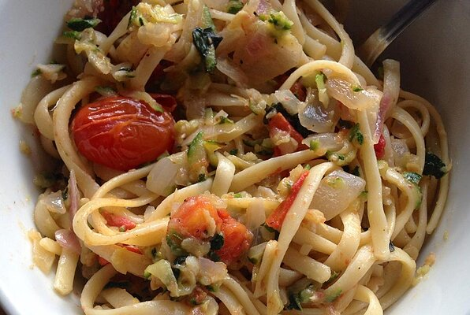

Pasta

Traditional Italian pasta
Ingredients
- 1 (16 ounce) package fettuccine noodles
- 2 tablespoon butter
- 2 zucchini, shredded
- 5 cloves garlic, minced, divided
- salt and ground black pepper to taste
- 1 tablespoon olive oil, or as needed
- 1 onion, sliced
- 1 (4 ounce)log goat cheese, crumbled
- 2 cups cherry tomatoes
- 1/4 cup chopped fresh basil, or to taste
Back to Home Page